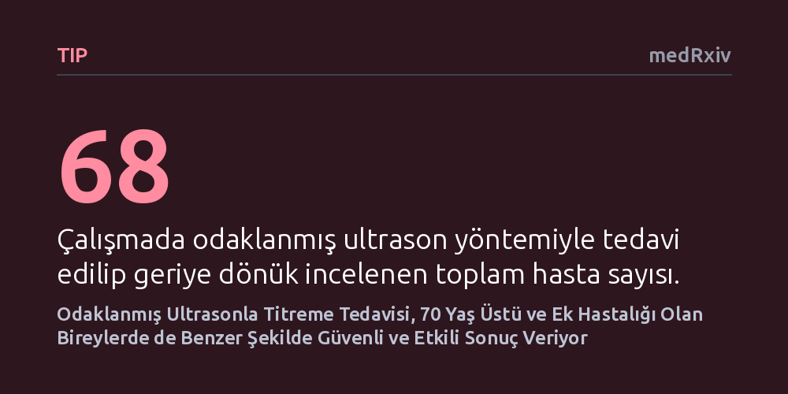

TIP · medRxiv · 2026-10-19
Esansiyel tremor hastalarında odaklanmış ultrason tedavisinin ileri yaşta ve ek hastalığı olanlarda ne kadar güvenli ve etkili olduğu incelendi. 68 hastanın verileri, 70 yaş üstü bireyler ile ek hastalığı bulunanlarda yöntemin genç hastalarla benzer başarı ve güvenlilik profili sunduğunu gösterdi.
Kafatasını açmadan uygulanan ses dalgası tedavisinin, yüksek cerrahi risk taşıyan ileri yaştaki ve kronik rahatsızlığı bulunan titreme hastaları için de güvenilir bir seçenek olabileceğini göstermektedir.

Esansiyel tremor, özellikle ellerde istemsiz titremelere yol açarak hastaların yazı yazma, su içme ve yemek yeme gibi en temel günlük işlevlerini dahi zorlaştıran yaygın bir hareket bozukluğudur. İlaç tedavisine yanıt vermeyen hastalarda son yıllarda manyetik rezonans kılavuzluğunda yüksek yoğunluklu odaklanmış ultrason (MRgHIFU) öne çıkan bir tedavi seçeneği haline gelmiştir. Bu yöntem, kafatasında herhangi bir cerrahi kesi veya delik açmadan, yüksek enerjili ses dalgalarını beyindeki talamus çekirdeğine odaklayarak titremeyi tetikleyen hatalı sinir devrelerini ısı yoluyla etkisiz hale getirir.
Bununla birlikte, bu yöntemin 70 yaş ve üzerindeki ileri yaş grubunda ya da kalp, tansiyon ve akciğer gibi ek kronik hastalıkları bulunan bireylerde ne kadar güvenli ve etkili olduğu klinik olarak belirsizdi. İleri yaştaki bireylerin hassaslaşan beyin yapısı ve ek rahatsızlıkların getirdiği komplikasyon kaygıları, hekimleri bu hasta grubuna müdahale etme konusunda tereddütte bırakıyordu. Dolayısıyla, en çok yardıma ihtiyaç duyan bu kırılgan grubun tedaviden gerçekten fayda görüp görmediğinin netleştirilmesi gerekiyordu.
Araştırmacılar, Parkview Bölgesel Tıp Merkezi'nde Ocak 2023 ile Kasım 2025 tarihleri arasında odaklanmış ultrason ile talamotomi uygulanan 68 hastanın elektronik sağlık verilerini geriye dönük olarak analiz etti. Etik kurul onaylı bu gözlemsel çalışmada hastalar; 70 yaş altındakiler ile 70 yaş ve üzerindekiler olarak yaşa göre, ayrıca eşlik eden kronik hastalıklarının varlığına göre gruplandırıldı.
Hastaların tedaviye yanıtı, titreme şiddetini ölçen standart bir klinik ölçek (CRST) ve günlük yaşama etkisini değerlendiren yaşam kalitesi anketi (QUEST) ile işlemden sonra bir yıla kadar takip edildi. Ayrıca işlem sonrasında gelişen tüm yan etkiler düzenli aralıklarla taranarak yöntemin güvenlik profili hem yaş hem de ek hastalıklar bağlamında karşılaştırmalı olarak incelendi.
Takip sonuçları, odaklanmış ultrason uygulanan tüm hasta grubunda hem titreme şiddetinde hem de yaşam kalitesinde bir yıla varan belirgin ve kalıcı düzelmeler olduğunu gösterdi. En dikkat çekici bulgu ise, 70 yaş ve üzerindeki yaşlı hastalar ile 70 yaşın altındaki daha genç hastaların ilk üç aydaki iyileşme düzeyleri arasında istatistiksel açıdan hiçbir anlamlı fark bulunmamasıydı. Benzer şekilde, hastalardaki ek kronik rahatsızlıkların tedavi sonuçları üzerindeki etkilerinin yalnızca geçici olduğu ve nihai başarıyı olumsuz etkilemediği saptandı.
Güvenlilik tarafında ise yaşlı hastalar açısından oldukça olumlu bir tablo ortaya çıktı. İşlemden üç ay sonra 70 yaş üzeri grupta görülen ortalama yan etki sayısı, genç gruba kıyasla anlamlı derecede daha düşüktü. Akciğer hastalığı bulunan bireylerde de birinci ayda daha az yan etki saptandı. Yalnızca ailesinde titreme öyküsü olan bireylerde ilk gün bildirilen yan etki oranı biraz daha yüksek bulundu, ancak bu etki kalıcı bir risk oluşturmadı.
Elde edilen bulgular, anestezi ve açık cerrahi riskleri nedeniyle klasik ameliyatlardan dışlanan yaşlı ve ek hastalığı bulunan titreme hastaları için odaklanmış ultrasonun umut verici bir seçenek olduğunu ortaya koymaktadır. Kronik rahatsızlıkların veya ileri yaşın, tek başına bu tedaviye engel bir gerekçe oluşturmayabileceği görülmektedir.
Bununla birlikte, çalışmanın sınırlılıkları göz ardı edilmemelidir. Araştırma yalnızca tek bir merkezde tedavi gören 68 kişilik sınırlı bir hasta grubunun geçmiş kayıtlarına dayanmaktadır ve henüz bağımsız hakem denetiminden geçmemiştir. Yazarların da vurguladığı üzere, odaklanmış ultrasonun farklı risk gruplarında tam anlamıyla eşdeğer sonuçlar verdiğini doğrulamak için daha geniş hasta topluluklarıyla yapılacak kapsamlı araştırmalara ihtiyaç vardır.